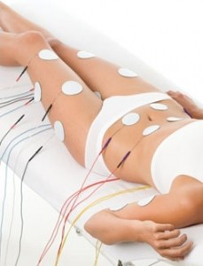

EMS -
ELEKTROSTIMULÁCIÓ

A Myostim elektrostimulációval működő gép amely 45 perces kezelés alatt akár több százszor aktiválja az izmokat anélkül, hogy a vendégnek különösebb erőfeszítést kellene tennie.
Az elektrostimuláció folyamatosan váltakozó összehúzódási és ellazítási intervallummal mozgatja meg a kiválasztott izomcsoportokat, újraformálva és tónusba hozva a petyhüdt és rugalmasságukat vesztett területeket.
Ezzel a technikával elérhető, hogy csak a kívánt izmok dolgozzanak, elkerülve a test azon területeinek erősödését, amelyek esztétikai szempontból nem kívánatosak.
A készülék használata rendkívül hatékony és kényelmes, pihenés közben, rövid idő alatt látványos és hosszú távú eredmények érhetők el.
Az EMS nagy előnye még az aktív tornával szemben, hogy nem kíván állóképességet, amely hiánya általában kevésbé eredményessé teszi a kívánt hatást. Nagy különbség még, hogy nem jön létre fáradsági érzet és izomláz, de a készülék anyagcsere gyorsító hatása miatt alkalmas izomláz oldására is.
A kezelés végén a páciens pihentebbnek, könnyebbnek érzi magát.
Az elektrostimulációt hatékony tudjuk alkalmazni nemcsak izom fejlesztésre, de a bőr szerkezetének javítására is. Kezelés végére izmok tónusosabban, a bőr pedig feszesebb lesz.
Ellenjavallatok: Pace maker vagy szívproblémák esetén a felső testen, implantátum feletti testrészen, várandósság ideje alatt, lázas állapot vagy a kezelendő felület gyulladása, daganatos megbetegedések, bőrbetegség, fertőző betegségek, lázas állapot.